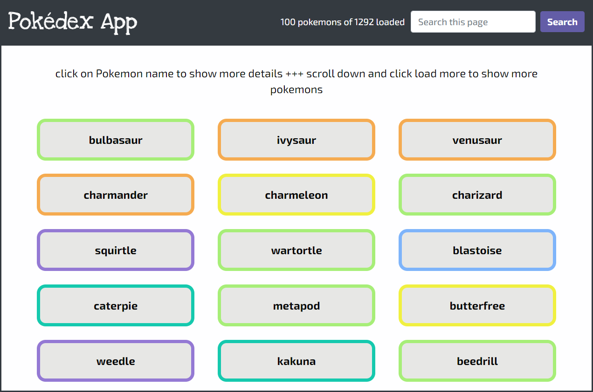
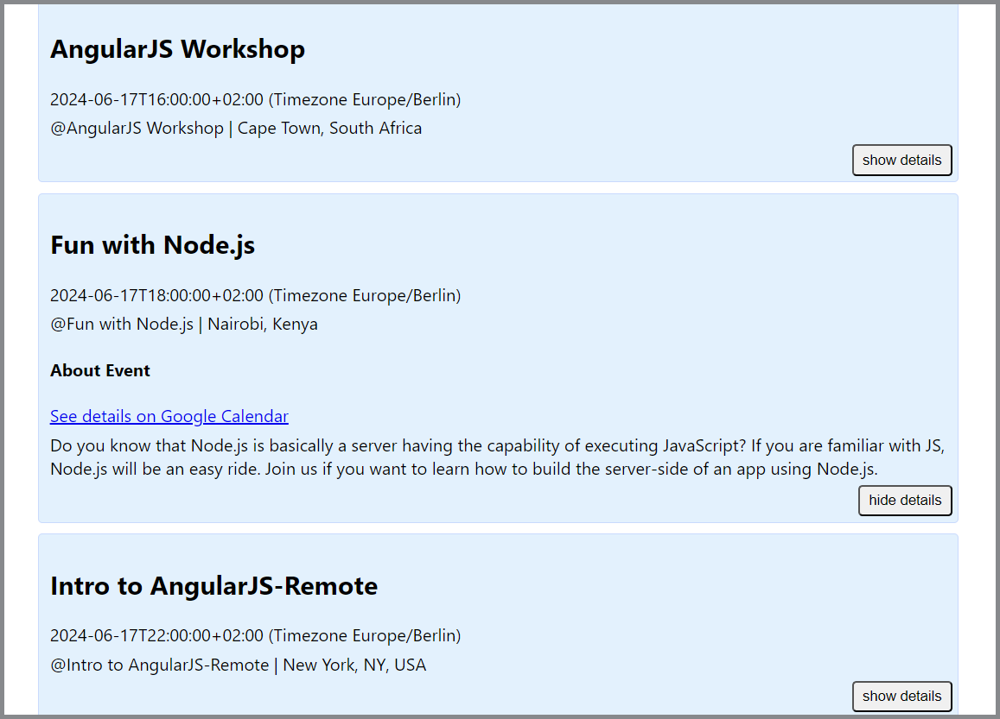
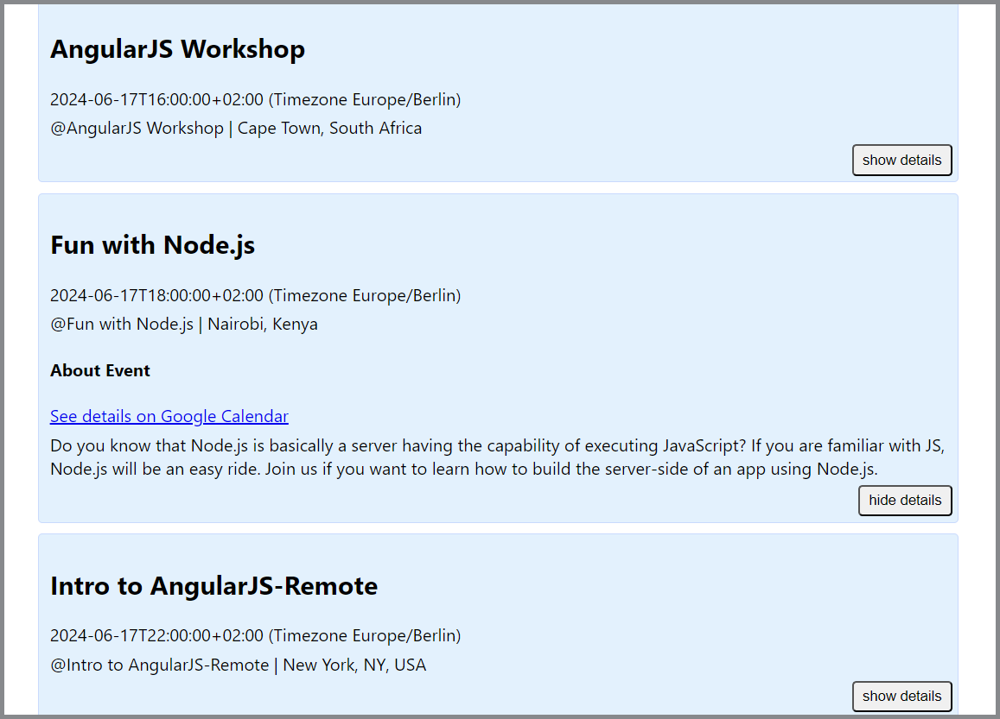

My Work
Pokédex App
A small web application built with HTML, CSS and vanilla JavaScript that loads pokemon data from an external API and enables the viewing of data points in detail.
Pokédex App
Objective
To build a small web application with HTML, CSS, and JavaScript that loads data from an external API and enables the viewing of data points in detail
Screenshots

Technologies used
- App was created with vanilla JavaScript
- Data is loaded from pokeapi.co
- Bootstrap and jQuery used for styling and navigation bar
Movie REST API
Server-side component of a web application built with Node.js, Express and MongoDB.
The app
provides users with access to information
about different movies, directors and genres. Users can sign up, update their
personal information, and create a list of their favorite movies.
Movie App client
This React App is the client side component of the Movie REST API.
Users are provided with access to information about different movies, directors and genres.
Users can sign up, update their personal information, and create a list of their favorite
movies.
Meet App
A serverless, progressive web application (PWA) with React using a test-driven development (TDD) technique. The application uses the Google Calendar API to fetch upcoming events.
Meet App
Objective
To build a serverless, progressive web application (PWA) with React using a test-driven development (TDD) technique. The application uses the Google Calendar API to fetch upcoming events.
Screenshots
 

Technologies used in project
- JavaScript
- React
- AWS Lambda functions to handle authentication process with Google
- Google Calender API
- Test Driven Development
- Test runner jest for unit and integration tests
- Jest-cucumber for acceptance tests
- Pupeteer for end-to-end tests
- gh-pages for deploying and hosting with GitHub Pages
- Web App Manifest and Service Worker was implemented to convert app into a Progressive Web Application
- Recharts for data visualization
Link to live App
To view the app, login with a google account is required.